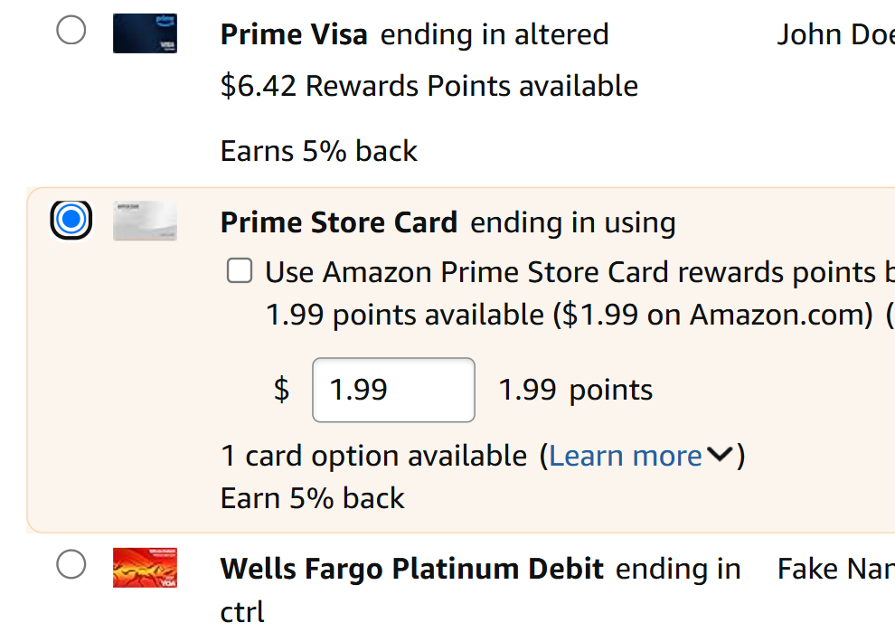

This website displays a case study into the use of checkboxes and radio buttons across three different websites, focusing on the state models for each one. State models help us organize transitions across different user actions (i.e., when a user hovers over an element, how does its state change?). The case study will present state models and provide recommendations for a new state model for one of the websites with learnability and accessibility in mind. Use the tabs below to explore the different sections of this study.
This section explores the use of the Radio Buttons or Checkboxes across Amazon, Courses@Brown, and Google Flights. Click through the tabs below to read about their inputs and outputs across the state model.
| Input | Output | |
|---|---|---|
| Keyboard |
|
|
| Mouse |
|
|
Image 3. The Default, Selected, and Hovered states (top to bottom) can be observed in this image.
Image 4. A button that has been tabbed into focus.
| Input | Output | |
|---|---|---|
| Keyboard |
|
|
| Mouse |
|
|
Image 6. Hovering over a radio button in Flights created a light shadow. The selected state can also be observed in this photo.

Image 7. Pressing a radio button darkens the shadow.
Image 8. Tabbing into a selected button darkens the fill and outline to indicate focus.
| Input | Output | |
|---|---|---|
| Keyboard |
|
|
| Mouse |
|
|
Image 3. Hovering over a checkbox in C@B slightly darkens the outline.
Image 4. Hovering over a selected checkbox darkens the fill.
Image 5. Tabbing into a checkbox creates a dark square outline.
The states described in the table above are visualized in the state diagrams below. The State models for the Amazon design are provided as the focus of this case study, given that we will be offering a recommendation for it's current state model.
Image 1. State diagram for Mouse users
Image 2. State diagram for Keyboard users
To improve the current model, I will focus on the Mouse User's model, given that there is no distinction between the Default (unselected) or Active (pressed down). Taking inspiration from Google's model, I recommend the following model for Amazon.
Image 2. New State Diagram for Users
The adjustments to the diagram are bolded. The primary change was the separation of the Active and Default state for mouse users in an attempt to improve learnability and accessibility. The following details outline the changes made and why.
Adding a light blue fill creates more contrast between hover and default, improving accessibility and learnability by indicating 'soft selection'. Adding a distinctive Active State wanrs the use of an action they are about to perform, improving acessibility and learnability. Transitioning from Active to Hover when the user drags while pressed improves learnability for this "hack".
A Mockup for this state can be seen below:
Image 8. Mock Up for new Amazon state
Figma Link Here: https://www.figma.com/design/GlQihZFWHj6cnx4u2D8tZt/Accessible-Design-Redesign?node-id=1-2&t=QGP3ZmB7aRAIq1cS-1